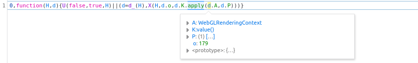

Top sites from: https://www.alexa.com/topsites/countries/US
No claims made about accuracy
| Site | Fingerprinting? | JS URL | JS Snippet |
|---|---|---|---|
| google.com | Yes | https://www.gstatic.com/og/_/js/... | window.botguard (very obfuscated) |
| youtube.com | Yes | https://www.youtube.com/s/player/.../player_ias.vflset/.../base.js | g.CU = $a(function () { var a = ''; try { var b = g.Fe('CANVAS').getContext('webgl'); b && (b.getExtension('WEBGL_debug_renderer_info'), a = b.getParameter(37446), a = a.replace(/[ :]/g, '_')) } catch (c) { } return a }); |
| Amazon.com | Yes | https://c.amazon-adsystem.com/bao-csm/forensics/a9-tq-forensics.min.js | b = H('(function fg45s() { var payload = []; var canvas = document.createElement("canvas"); var gl = canvas.getContext("webgl") || canvas.getContext("experimental-webgl") || canvas.getContext("moz-webgl"); if (gl != null) { var debugInfo = gl.getExtension("WEBGL_debug_renderer_info"); if (debugInfo != null) { payload.push(btoa(gl.getParameter(debugInfo.UNMASKED_VENDOR_WEBGL))); payload.push(btoa(gl.getParameter(debugInfo.UNMASKED_RENDERER_WEBGL))); parent.postMessage(window.frameElement.id + " " + JSON.stringify(payload), parent.location.origin); } } } )();', a); |
| Yahoo.com | Yes | https://s.yimg.com/rq/iv/inside.js | try { var t, e = dt.createElement('canvas'), n = e.getContext('webgl') || e.getContext('experimental-webgl'); return 0 <= n.getSupportedExtensions().indexOf('WEBGL_debug_renderer_info') ? (t = n.getParameter(n.getExtension('WEBGL_debug_renderer_info').UNMASKED_VENDOR_WEBGL), n.getParameter(n.getExtension('WEBGL_debug_renderer_info').UNMASKED_RENDERER_WEBGL) && t ? 1 : 0) : 0 } |
| Zoom.us | No | ||
| Facebook.com | Yes | https://static.xx.fbcdn.net/rsrc.php/....js?_nc_x=... | function g(a) { var b = document.createElement('canvas'); b = b.getContext('webgl') || b.getContext('experimental-webgl'); if (!b) return; var c = b.getExtension('WEBGL_debug_renderer_info'); if (!c) return; var d = b.getParameter(c.UNMASKED_RENDERER_WEBGL); b = b.getParameter(c.UNMASKED_VENDOR_WEBGL); a.gpu_vendor = b; a.gpu_renderer = d } |
| Reddit.com | Yes | Unknown | Obfuscated  |
| Wikipedia.org | No | ||
| Myshopify.com | No | ||
| Ebay.com | Yes | https://src.ebay-us.com/... | td_D1 += td_kj.getParameter(td_kj.VERSION); td_D1 += td_kj.getParameter(td_kj.SHADING_LANGUAGE_VERSION); td_D1 += td_kj.getParameter(td_kj.VENDOR); td_D1 += td_kj.getParameter(td_kj.RENDERER); |
| Bing.com | No | ||
| Live.com | No | ||
| Microsoft.com | No | ||
| Chase.com | Yes | https://www.chase.com/c/.../etc/designs/chase-ux/clientlibs/chase-ux/js/dist/index.min.js | var Gu = function () { var t = u.createElement('canvas'), n = t.getContext('webgl') || t.getContext('experimental-webgl'); if (p(n)) return null; var e = n.getExtension('WEBGL_debug_renderer_info'); if (p(e)) return null; var r = n.getParameter(e.UNMASKED_RENDERER_WEBGL); return p(r) ? null : r }(); |
| Netflix.com | No | ||
| Instructure.com | No | ||
| Instagram.com | Yes | https://www.instagram.com/static/bundles/es6/Consumer.js/....js | try { o.addEventListener('webglcontextlost', t); const s = o.getContext('webgl', u) || o.getContext('experimental-webgl', u); if (!s) return { supported: !1 }; const c = s.getExtension('WEBGL_debug_renderer_info'); c && (n = s.getParameter(c.UNMASKED_RENDERER_WEBGL)), o.removeEventListener('webglcontextlost', t) } catch (t) { |
| Zillow.com | No | ||
| Twitch.tv | Yes | https://static.twitchcdn.net/assets/player-core-variant-....js | if (t && i) { if (!a && !u) { var n = document.createElement('canvas'); try { var r = n.getContext('webgl') || n.getContext('experimental-webgl'); if ('getExtension' in r) { var o = r.getExtension('WEBGL_debug_renderer_info'); 'getParameter' in r && (a = r.getParameter(o.UNMASKED_RENDERER_WEBGL), u = r.getParameter(o.UNMASKED_VENDOR_WEBGL)) } } catch (e) { } } e.arg.properties.gl_renderer = a, e.arg.properties.gl_vendor = u } |
| Intuit.com | Yes (via youtube) | https://www.youtube.com/s/player/.../player_ias.vflset/.../base.js | |
| Espn.com | No | ||
| Linkedin.com | No |